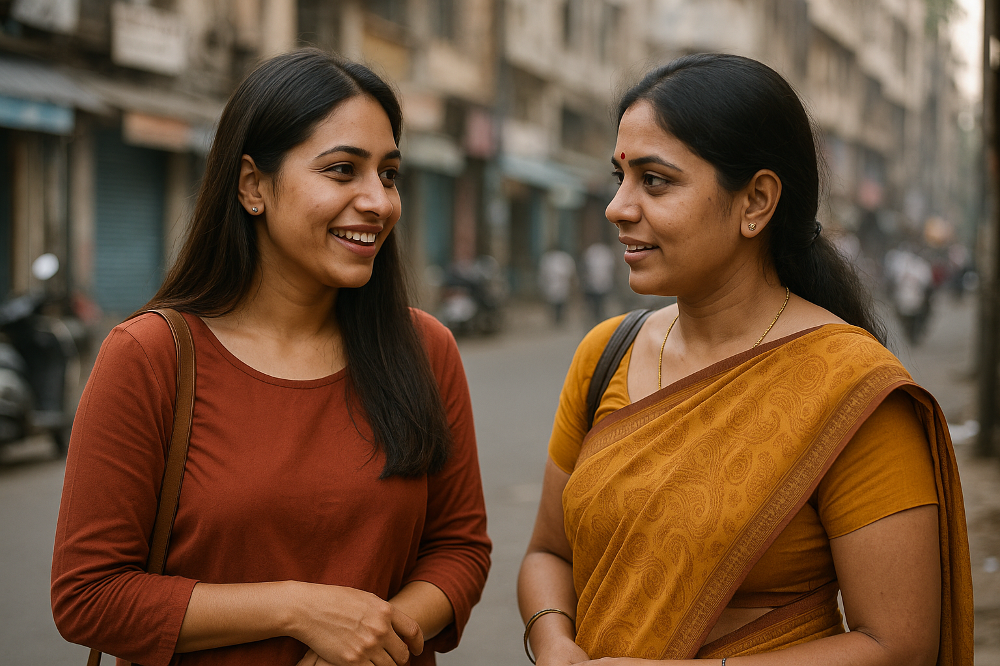
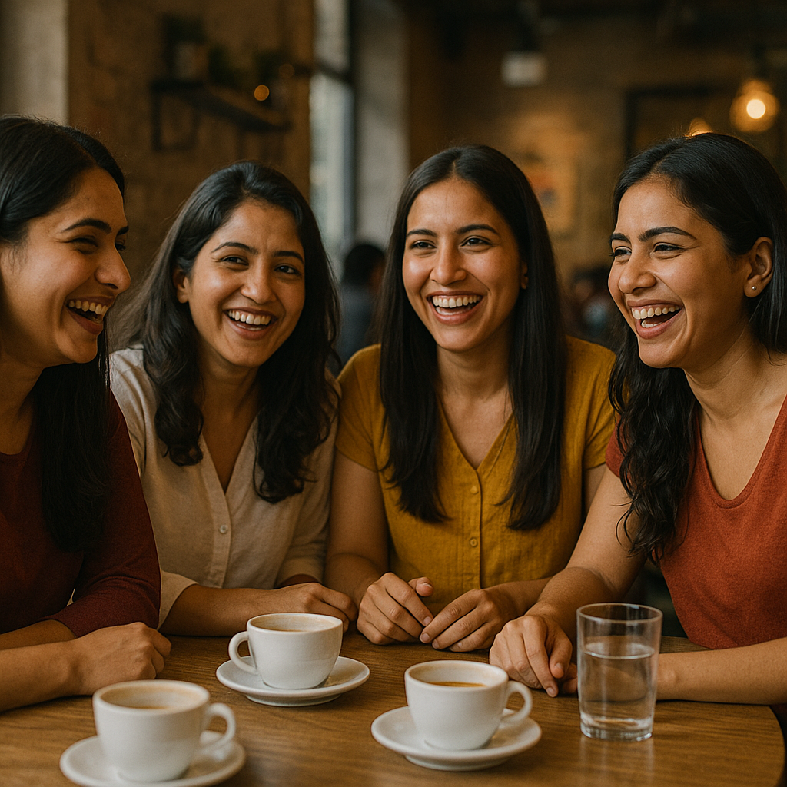

How It Works
Tell Us About Yourself
Help us get to know you better! Share your interests, life stage, and what you're looking for in a meaningful connection. The more we know, the better we can match you with people who truly align with your journey. It’s the first step towards finding authentic connections that matter!

Meet Your Matches
You'll be introduced to a small, intimate group of 3-5 like-minded women who share your interests and life stage. A trained host will guide the conversation, ensuring everyone feels comfortable and engaged. This creates a warm, supportive space where you can connect on a deeper level and build authentic friendships with women who truly understand your journey.

Sign Up for Recurring Meetups
Loved your group? Keep the connections alive by signing up for a 6-week series of recurring meetups! After your first experience, if you're excited to continue, just sign up. We’ll take care of everything – you just show up and enjoy the ongoing support and camaraderie. It's a simple way to nurture meaningful friendships and stay connected with your group.

Stay in touch
Not ready to commit, but want to stay in touch? Sign up for our mailing list and we'll keep you updated on new city launches, series dates, and more.